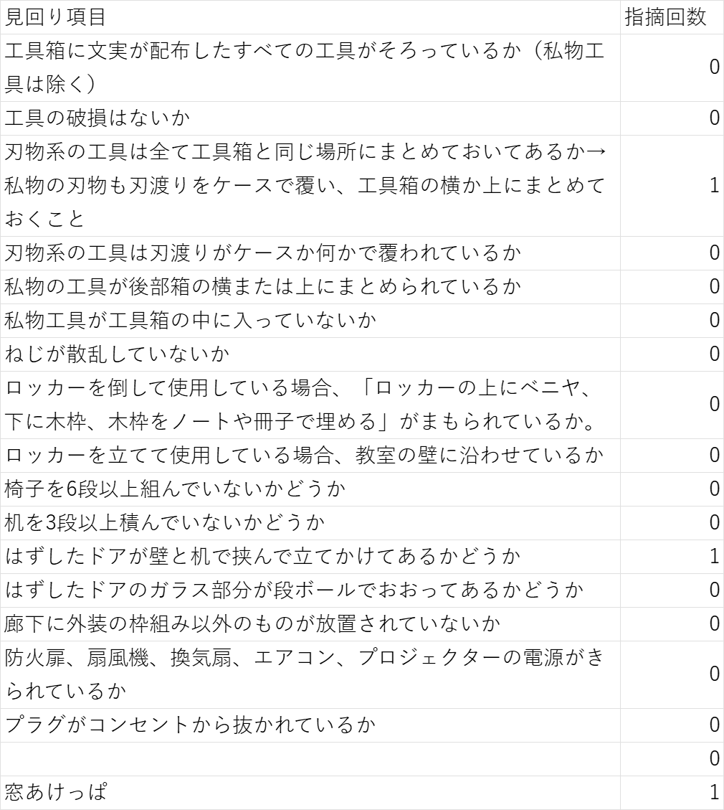
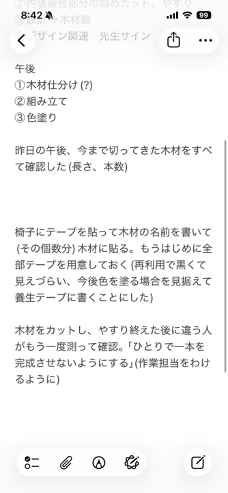
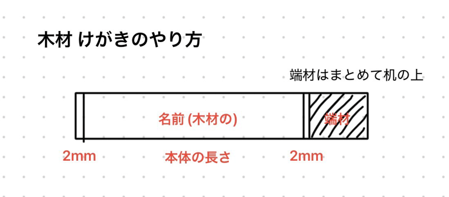
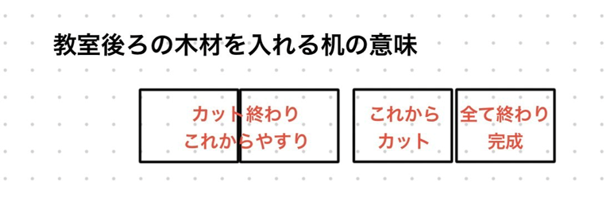

夏季休業の動き
いろは
目次
マニュアル
見回り項目




必要物品・購入予定
残金：n円+徴税
・ワッシャー n個 ・ボンド nml n個 n円
・ボンド nml n個 etc・・・ライド本体
内装
・ベニヤ n*m*2.5 n枚 n円
・新聞紙 n枚程度 etc・・・
外装
進捗
2026.08.13
【仕事のこれまでとこれから】
まず人材の配置ですが、これまでなるべく技術者（＝ここでは専門の知識と経験を兼ね備えた者。以下エンジニア）をその担当場所に振り分けていました。
理由としては仕事が速いのと質が高いからです。
次にライドが進まなかった原因ですがきちんと予定を立てていなかったこと、木材が切り終わっていなかったこと、
外装を先に進めてしまったためそちらを優先したかったこと、外装とライドの組み立てを同時に処理できる自信がなかったことだと考えています。
本当にごめんなさい。
以下現在の大まかな進捗とこれからすべきことをまとめました。
難易度は主観です。B超えたら要エンジニア。
またこれからの仕事を踏まえて新たなエンジニアを育成したいと考えたため8/14にライドの接合に関われるプランを用意しました。
これまで電ドラを触っていない方ぜひ来てください。
異論付け足し等あれば教えてください。
p.s. 手に負えなくなったら彼の先輩を呼びましょう。直接見てくださるとのことです。
それから先輩より、試走会で求められているのは
「教室に入って展示を一周し教室から出る一連の流れができる状態」
です、、、、
〈ライド（レール）〉〆切試走会
B,Gシリーズ 難易度C
☑B-abc接合
→斜めカットとその接合。
☐B-a,B-c接合
☐G-ac接合
Grayシリーズ 難易度D
☐切断
☐接合
→Bシリーズを乗り越えた君たちならできる。
＞＞新人エンジニア育成プロジェクト＜＜ 8/14午前あたりにB,G,Grayシリーズの接合体験会をします。
Pシリーズ 難易度B
☐接合
→ちょっと浮いたらアウト。ライド本体の悪夢。
＞＞新人エンジニア育成プロジェクト＜＜ 8/14午後あたりにP-cの接合体験会をします。
コンパネ 難易度D
☐カット←Gray接合面倒なので設計より80くらい大きめに切ろう
☐接合
→Pシリーズの出来次第。
ストッパーシリーズ 難易度A
☐組立
→設計ミス見つけたので指示に従ってほしいです。すみません、、、
→役割はストッパー。
☐見た目の装飾は一旦パス。管轄外。
〈ライド本体（トロッコ）〉〆切当日
1台目
☑組立
2台目 難易度A
☐キャスター取り付け
→ワッシャー買ってない。
→ミスったら危険だし見てて大変そうでした。狭い。
〈内装（壁ほか）〉〆切試走会
☑木材切断
Z-hシリーズ 難易度C
☐組立
→高さ制限だけ気を付けて。
Z-rシリーズ 難易度C
☐組立
→支えが少ないので気を付けて。
Z-rr(読みはダブルアール)シリーズ 難易度SS
☐斜めカット
☐組立
→斜めカットはライドと同じ。エンジニアの中でもライド経験者が望ましい。
→ライドと違うのは高さが出るところ。あとずれたらやり直しってところ。
→怖くなったら都度低予算土台を入れましょう。
Z-sシリーズ 難易度B
☐ドア、装飾（ベニヤ含む）は一旦パス。
Z-pシリーズ 難易度SSS
☐組立
→作戦会議します、、、
〈外装〉〆切電力調査日？ w/外チが非常に望ましい。
ABDシリーズ 難易度S
☐組立
→やり直しが大変。
CEシリーズ 難易度B
☐組立
→比較的。
Fシリーズ 難易度A
☐組立
→箱型なだけましだがABと接合が面倒な上高さの問題もある。
GHIJシリーズほか 難易度C
☐切断
→何が足りないのかわかってないです、、、
☐組立
＞＞新人エンジニア育成プロジェクト＜＜ 外チいるならやってもよい。
タイトル、ベニヤ、レンガほか 難易度E
☐案
☐切断
→上振れにご注意。
☐組立
→w/外チ。絶対。
☐装飾はもちろん一旦パス。詳細は外チさんに。
2026.08.07 LINEより(一部変更)
【引き継ぎ】
内装の木を全部切り終わって、斜めカットもしてまとめてあるので、ごちゃごちゃにしないでください。
ある程度木材の整理をしましたが、1125が言っていた木材は見当たらなかったため、全部切り直しと思われます。
外装のレンガは1200個いったと思います。
連休明けの作業では、立て看板を完成させてください。
また、木材のカットに関しては、1125くんの指示で動きましょう。
墨汁も持ってきてください。
@1125 来週から頑張ってください！
2026.08.07 LINEより(一部変更)
【引き継ぎ】
罫書き、切断、やすりが全て終わった木材は白の養生テープでまとめました
★まとめた木材・Zh3・Zh6・Zh7・Zh9・Zr3・Zr4・Zr6・Zrr1・Zrr2・Zrr3・Zrr5・Zrr6
★罫書きは全て終わりました(明日は切断、やすりからです)
★墨汁の量が足りなかったため、ライドの塗装は終わっていません。(墨汁を持っている人は持ってきてください。お願いします。)
2026.08.06 LINEより
【設チより】遅くなってしまいごめんなさい。
パソコンの調子が悪いのでLINEで失礼します。
本日は1.内装の罫書きをお願いします。内装は頭文字がZです。
その後ろにh,r,rr(ダブルr),s,pのどれかがつきます。
h:heater r:rideA rr:rideB s:staff p:pathの意。今日中に終わらないと思いますが、組み立ては絶対にしないでください。
外装の2.5乗難しいと思います。
2.また、ライド本体も完成させたいです。内チさんの指示に従ってください。
3.ライド=レールも昨日から作業を始めています。
昨日のライド制作メンバーがいませんが、B→G→Pの順でマニュアル及びスケッチアップを見ながら作ってください。
なお、タグを見る際は必ずG-aを表示させるようにしてください。井上さん中心にお願い致します。
4.外装ですがミスが複数発覚したので設チ、外チの指示なく触らないでください。
金、月曜日作業してくれた方ごめんなさい。作業するなら、設チ、外チ、ハンド部の誰かが2人いる時がいいと思います。
技術がないとまたやり直しです。
>>1103さん、1125さん
木材の長さを測りました。
サイトの外装の要修正のところにあります。赤文字のところが要修正箇所です。あと、C-T3が25mm削り忘れてます。
2026.08.03 LINEより
【今日できたこと】
トロッコ2代目の床完成。
1代目キャスター組み立て完了！
2代目はまだ、
外装の木材の組み立て！
トロッコの木材の角取り
立て看板レンガ造り
【明日からやって欲しいこと】
外装の続き
内装の木材組み立て
トロッコのキャスター付
外装木材作成
レンガ造り
トロッコの色塗り
トロッコ木材の角取り
帰る時に外装の木材は壁に立てたんですけど、若干大きかったようにも思えたので、その辺の調整
木材が多くなってきたので種類ごとの仕分け
トロッコが動くようになって、試走会もしました！
順調に進んでいる気がするけど、まだまだやることが沢山あるので焦らずしっかり作っていきましょう(しっかり)(しっかり)(しっかり)
仕分けをしてもいいかもって書いたんですけど、付箋とかを使って何本足りないかとか、足りてるなら木材の長さは適切かなとかも見てもらえると後で楽できるかもしれません！！
長くなったけど明日からも一緒に頑張りましょ！！(頑張る)